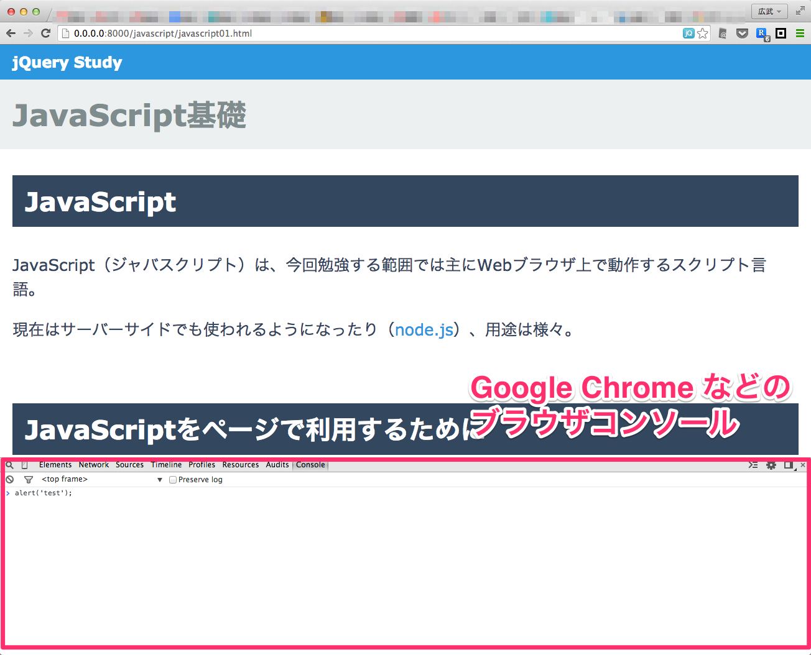

JavaScript（ジャバスクリプト）は、今回勉強する範囲では主にWebブラウザ上で動作するスクリプト言語。
現在はサーバーサイドでも使われるようになったり（node.js）、用途は様々。
JavaScriptを勉強するにあたり、JavaScriptをHTML内で使う方法を先に学んでおきます。
<script>〜</script>scriptタグ内にJavaScriptのコードを書くことで利用できます。
<script src="js/my_script.js"></script>基本的にはこちらで利用します。１のHTMLに直接書く方法だと、作業者が分離しにくく、HTMLタグとスクリプトが混在してしまうため、メンテナンス性に欠けてしまうため。
※ しかし、HTMLファイルと別途で読み込みを行うため、読み込み速度面でのみみると１のほうが早いため、ケース・バイ・ケースで使い分けるのが良いです。
<!DOCTYPE html>
<html lang="ja">
<head>
<meta charset="UTF-8">
<title>例示</title>
〜
<script>
(function(i,s,o,g,r,a,m){i['GoogleAnalyticsObject']=r;i[r]=i[r]||function(){
(i[r].q=i[r].q||[]).push(arguments)},i[r].l=1*new Date();a=s.createElement(o),
m=s.getElementsByTagName(o)[0];a.async=1;a.src=g;m.parentNode.insertBefore(a,m)
})(window,document,'script','//www.google-analytics.com/analytics.js','ga');
ga('create', 'UA-xxxxxxxx-x', 'auto');
ga('send', 'pageview');
</script>
</head>
<body>
〜〜
</body>
</html>Google Chrome や Firefox などのブラウザコンソール（開発環境のコンソール）で簡単にコードの実行ができるので試してみましょう

alertalert('アラート');alert(1 + 1);